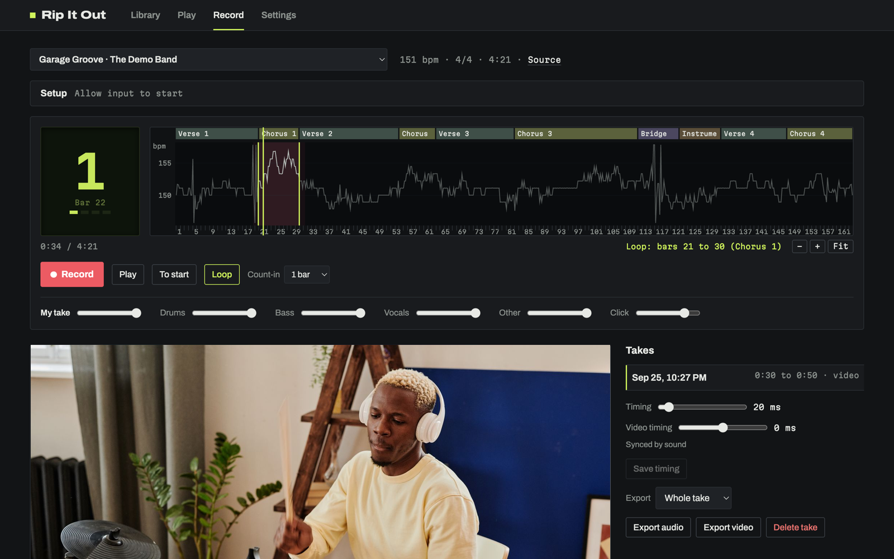
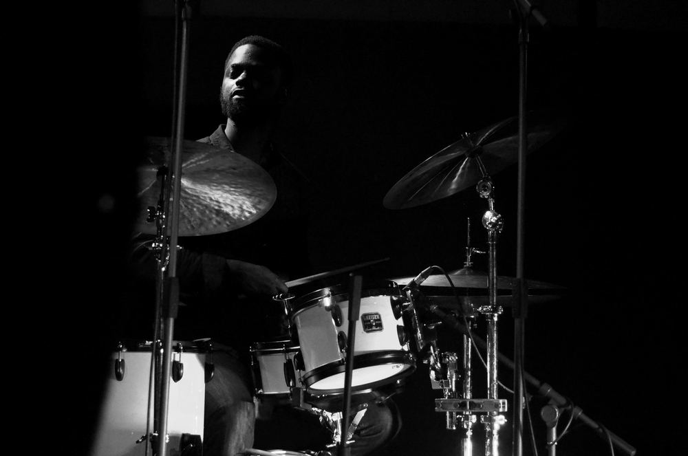
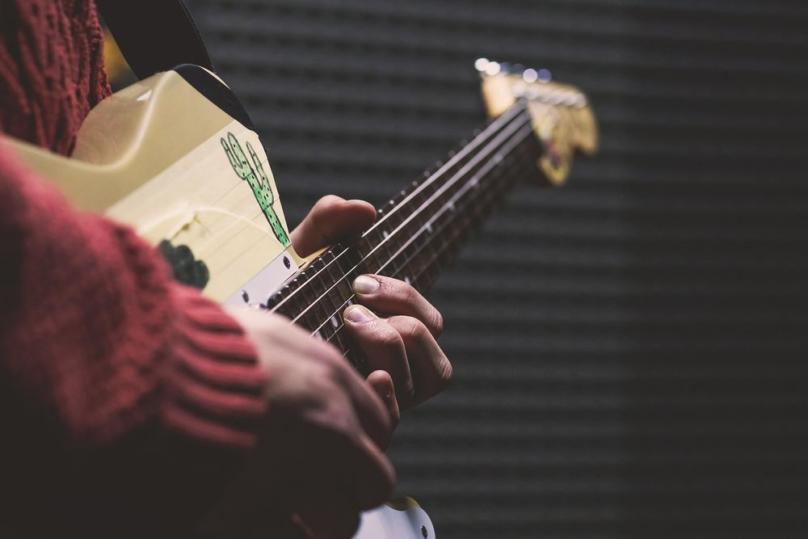
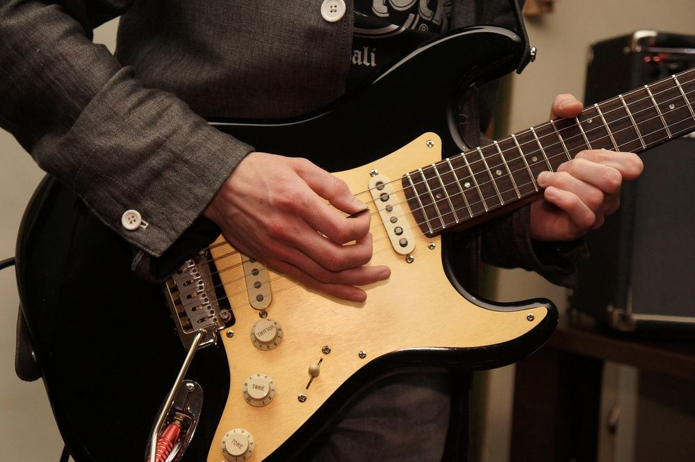
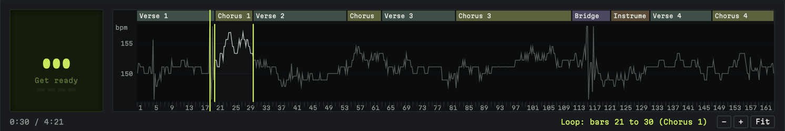
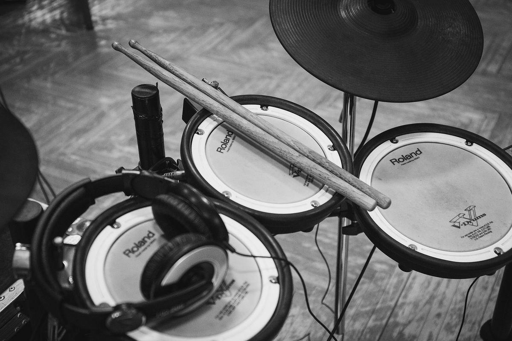
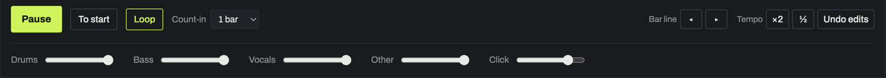
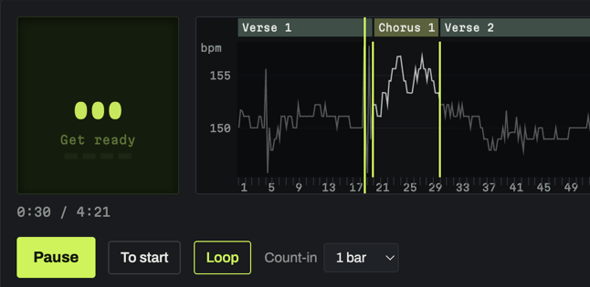
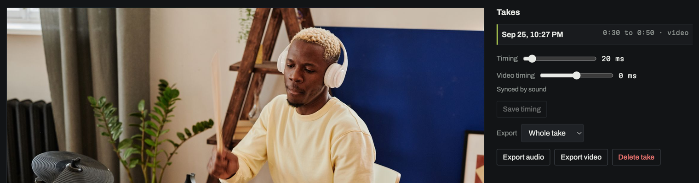
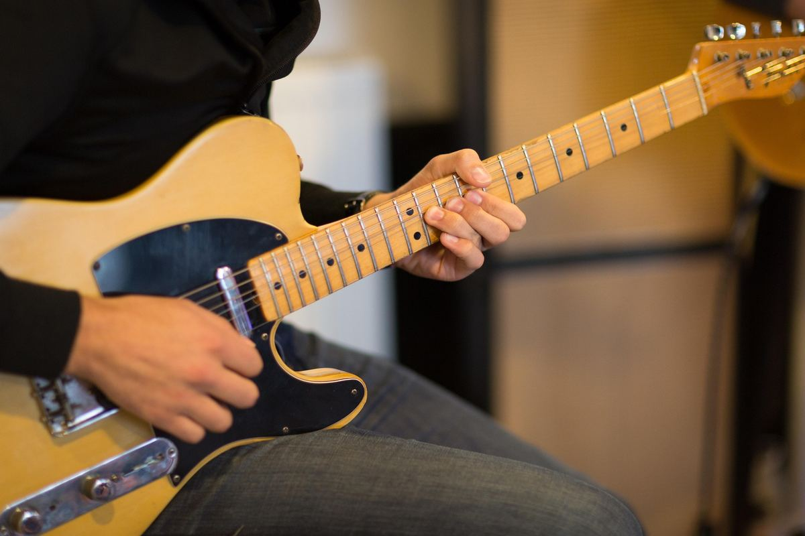

You know the song.
Now play it.
Rip It Out takes your instrument out of the original recording, so you can practise your part with the actual band.
Free and open source · Mac and Windows · How to install

Take your part out of the song.
You know the riff.
You know the chorus.
You can hear exactly what you're supposed to play.
Now take that part out of the recording, and play it yourself.
Rip It Out splits a song into drums, bass, vocals and everything else, and gives each one its own fader.
- Mute the drums. Play the drums yourself.
- Mute the bass. Play the bass yourself.
- Mute the vocals. Sing it yourself.
- Mute the guitars and keys. Play them yourself.
Or keep everything in and simply play along.
It's the original song. Just with your part missing.



Practise the bit you're actually struggling with.
Found the hard part?
Rip It Out finds the song's verses, choruses, bridge and solo for you. Tap one to jump straight there. Loop it. Play it again.
It follows the song's bars and tempo, even when the band speeds up, so you spend less time finding your place and more time playing.

Loop. Play. Again.
And again.
Until your hands know it.
Build the practice track you need.
You don't have to mute everything.
Keep the drums loud. Turn the bass down. Leave the vocals in. Take the guitar out.
Every part has its own volume, and so does the click, so you make the mix that works for you.


Your song. Your part. Your practice track.
Stay with the band.
A count-in gets you started.
A big counter shows you which bar and beat you're on.
A click that follows the band keeps you in time.
You watch the counter, not the software.
No restarting the whole song.
No hunting for the right timestamp.
No fiddling with a DAW.
Just play.

When you're ready, hit record.
Play your part with the band and record yourself.
Plug in your guitar, bass, microphone or electronic drums. Audio, video, or both.
Then listen back with the original recording still playing underneath.
Hear what you actually played.
Try again.
Keep the take you like.
Then send it to your friends as audio or video. On your phone too, with the mobile app.

Learn songs by playing them.
Rip It Out is a practice tool for musicians who learn songs by playing them, not by building backing tracks or hunting for isolated stems.
- Find the song.
- Take out your part.
- Play.
That's it.

Rip It Out
Practise songs by taking your part out, and putting it back in yourself.
Free and open source. Made for musicians.
I make Rip It Out in my spare time, and it's free. If it helps you practise, buy me a coffee.